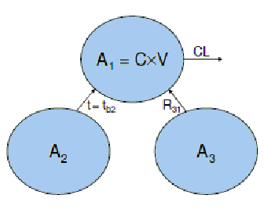
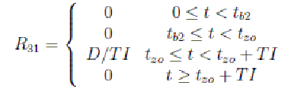
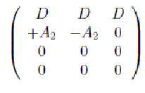
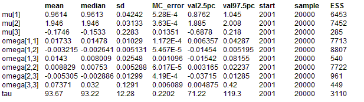

Change points: A piecewise differential equation model
All of the previous examples have first derivatives which are smooth functions of time (i.e. the second derivatives, with respect to time, are all continuous). OpenBUGS is capable of handling situations where this is not the case but it requires additional information regarding the times at which discontinuities occur. It needs this information so that it can break up the problem
into “blocks” of time where, throughout each block, all second derivatives are continuous. Because specifying such models is somewhat more complicated than with their smooth counterparts, OpenBUGS provides an additional BUGS-language component (ode.block) for solving these problems. The example from this section is also provided as a compiled component (DiffChangePoints).
Population PK Model
Our model for this example is designed to illustrate several features of ‘advanced’ OpenBUGS use, such as the specification of population models, handling discontinuities in time, and allowing compartments to empty into each other. In pharmacokinetics, a population model is required when, in order to draw inferences about the target population, a study is conducted whereby a number of healthy volunteers or patients each receive one or more doses of the drug under investigation and concentration measurements are taken from each one. Typically we have a (parametric) structural model that describes the shape of the concentration-time profile and we model variability throughout the study population by allowing the parameters of that structural model to differ between individuals. The structural model for this example is shown in the figure.

The human body is represented by a single compartment (“Compartment 1”) and as such is assumed to be homogeneous – the blood and all organs/tissues contain the same concentration of drug, C, which is given by the total amount of drug in the body at time t, A
1 = A
1(t), divided by an apparent volume of distribution, V . Drug is eliminated (or cleared) from the body via a ‘flow-rate’ of CL (clearance) – the rate of elimination, i.e. the rate at which drug leaves the body, is given by dA
el / dt= CL¡ C = CL¡ A
1/ V . Compartments 2 and 3 contain doses of drug to be administered, to Compartment 1, at times t = t
b2and t = t
zo, respectively. These have been incorporated purely for illustrative purposes – they are actually unnecessary as we could easily specify the model using Compartment 1 alone (with an appropriate sequence of initial conditions for each block of time). The full sequence of events that generates our model is described as follows. At time t = 0, the volunteer/patient receives an intravenous bolus dose
1 of size D. At time t = t
b2 > 0 a second bolus, of the same size, is administered. This is the process represented by the dashed arrow from Compartments 2 to 1 in the figure – dashed arrows represent processes whereby one compartment empties into another instantaneously at the specified time (t = t
b2 in this case) whereas normal arrows denote rates of movement of drug. At time t = t
zo > t
b2 a zero-order process is initiated between Compartments 3 and 1 whereby the dose initially in Compartment 3 (again, D) is transferred to Compartment 1 at a constant rate given by D/TI, where TI denotes the duration of the zero-order input process. Clearly this process must terminate at t = t
zo + TI. All of this means that the somewhat abstract quantity R
31 in the figure , which simply represents the rate of movement of drug from Compartments 3 to 1, is a piecewise smooth function of time. Explicitly, it is given by

More generally, we can write R
31 = pw(v, o, t), where v and o are vectors containing each smooth function and the times at which they begin, respectively; in this case, v = (0, 0,D/TI, 0), o = (0, t
b2, t
zo, t
zo +TI) and pw = v
b, where b =X
i i I(t ∈ [o
i, o
i+1)) (o
5 = ∞), that is, b simply specifies which ‘block’ of time, defined by a pair of ‘changepoints’, contains the current value of t. OpenBUGS provides a new BUGSlanguage component called piecewise(.) that can be used for specifying arbitrary piecewise-smooth functions within differential equation models. Only the vector v is required as an input parameter, however. This is because the ‘origins’ in o are passed into the associated ode.block(.) component instead, so that it knows where to break the problem up into ‘smooth’ sub-problems (t is defined/controlled by the ODE solving algorithm). For this reason, the o vector passed into ode.block(.) must comprise the union of all ‘changepoints’ in the model and each instance of piecewise(.) must be defined in terms of a smooth function vector (v) of the same length. This is why R
31 above incorporates components for both [0, t
b2) and [t
b2, t
zo) even though it has the same value throughout both intervals: ode.block(.) needs to know that a discrete event occurs at t = t
b2 and so all of its piecewise parents (just R
31 in this case) must be ‘split’ accordingly.
The system equations are as follows:
dA1/dt= R31(t) − CL A1 / V
dA2/dt = 0
dA3/dt = −R31(t)
(Note that neither bolus dose is represented in the system equations. This is because bolus doses are instantaneous and are thus best described via the initial conditions, as we discuss below.) The structural model is completed by the specification of a sequence of initial conditions for each compartment. First in the sequence are the initial conditions proper, which pertain to the time origin given by o
1. Note that the easiest way in which to model the first intravenous bolus dose is to simply specify A
1(o
1) = A
1(0) = D in the initial conditions. At each subsequent origin (e.g. o
2, o
3, o
4) we may, generally speaking, wish to apply an instantaneous adjustment to the system to account for certain types of discrete event that may have occurred, such as the administration of a bolus dose (which cannot be represented by a finite rate). In OpenBUGS we specify such adjustments by declaring an amount (of whatever quantity the differential equations are to be solved for) to be added to each compartment at the appropriate time. If no adjustment is specified (or if a value of zero is declared) then the relevant part of the system is left unchanged. Thus for the example above, we specify the following matrix of ‘initial conditions’, where rows correspond to origins (o
1, o
2, o
3, o
4) and the columns represent compartments:

The −A
2 in column 2 represents the change to the solution to the second differential equation at the relevant time, i.e. t = t
b2 (the second ‘origin’). Thus the amount of drug in Compartment 2 instantaneously changes from A
2(t
b2−) to zero at t = t
b2 (because its value is reduced by A
2(t
b2−)). In contrast, the amount of drug in Compartment 1 changes from A
1(t
b2−) to A
1(t
b2−)+A
2(t
b2−). In other words, Compartment 2 instantaneously empties into Compartment 1 at time t = t
b2. Since Compartment 2 initially contains an amount D of drug and
dA2 dt ≡ 0, this is equivalent to an intravenous bolus dose being administered, to Compartment 1, at t = t
b2. The statistical model is defined as follows. First note that the measurable quantity here is concentration of drug in Compartment 1, i.e. C = A
1/V . This is a function of the dose D, time t, and additional parameters, namely CL, V and TI, that we collectively denote by : C = C(, t,D). For this example we will allow both and D to vary between individuals, although the doses are assumed known, as they would be in practice (normally). Suppose we have n concentration measurements, indexed by j, from each of K individuals, indexed by i. We denote these by y
ij , i = 1, ...,K, j = 1, ..., n. Often in pharmacokinetics, the size of the error associated with each concentration measurement is proportional to the underlying true concentration and so we tend to model the natural logarithm of the data as a function of log C. At the first stage of the statistical model we assume
log y
ij = log C(
i, t
ij ,D
i) + e
ij , i = 1, ...,K, j = 1, ..., n,
where t
ij denotes the time at which y
ij was collected and the e
ij terms are independent and identically distributed normal random variables with mean zero and variance t
−1(i.e. precision = t). At the second stage of the model we have
Q
i ~ MVN
3(m,Ω), i = 1, ...,K,
where and Ω are the population mean and the variance-covariance of pharmacokinetic
parameters, respectively. At the final stage of our population model, appropriate multivariate normal, Wishart and gamma priors are specified for m, Ω
−1and t, respectively.In the BUGS language the model is
model {
for (i in 1:n.ind) {
for (j in 1:n.grid) {
log.data[i, j] ~ dnorm(log.model[i, j], tau)
log.model[i, j] <- log(model[i, j])
model[i, j] <- solution[i, j, 1] / V[i]}
solution[i, 1:n.grid, 1:dim] <- ode.block(inits[i, 1:2, 1:dim],
grid[1:n.grid], D(A[i, 1:dim], t[i]), origins[i, 1:n.block], tol[])
D(A[i, 1], t[i]) <- R31[i] - CL[i] * A[i, 1] / V[i]
D(A[i, 2], t[i]) <- 0
D(A[i, 3], t[i]) <- -R31[i]
R31[i] <- piecewise(vec.R31[i, 1:n.block])
vec.R31[i, 1] <- 0
vec.R31[i, 2] <- 0
vec.R31[i, 3] <- dose[i] / TI[i]
vec.R31[i, 4] <- 0
CL[i] <- exp(theta[i, 1])
V[i] <- exp(theta[i, 2])
TI[i] <- exp(theta[i, 3])
theta[i, 1:p] ~ dmnorm(mu[1:p], omega.inv[1:p, 1:p])
inits[i, 1, 1] <- dose[i]
inits[i, 1, 2] <- dose[i]
inits[i, 1, 3] <- dose[i]
inits[i, 2, 1] <- A[i, 2]
inits[i, 2, 2] <- -A[i, 2]
inits[i, 2, 3] <- 0
origins[i, 1] <- 0
origins[i, 2] <- second.bolus.time
origins[i, 3] <- zo.start.time
origins[i, 4] <- zo.start.time + TI[i]
}
#hyper priors
mu[1:p] ~ dmnorm(mu.prior.mean[1:p], mu.prior.prec[1:p, 1:p])
omega.inv[1:p, 1:p] ~ dwish(omega.inv.matrix[1:p, 1:p], omega.inv.dof)
omega[1:p, 1:p] <- inverse(omega.inv[1:p, 1:p])
tau ~ dgamma(0.001, 0.001)
}
Data
list(
p = 3, dim = 3,
tol = c(1.0E-6),
n.ind = 10, n.grid = 14, n.block = 4,
grid = c(0.05, 0.1, 0.2, 0.4, 0.6, 1.0, 1.5, 2, 3, 4, 8, 12, 16, 24),
dose = c(100, 95, 90, 85, 80, 75, 70, 65, 60, 55),
second.bolus.time = 2, zo.start.time = 8,
mu.prior.mean = c(1, 2, 0),
mu.prior.prec = structure(
.Data = c(
0.0001, 0, 0,
0, 0.0001, 0,
0, 0, 0.0001),
.Dim = c(3, 3)),
omega.inv.matrix = structure(
.Data = c(
0.03, 0, 0,
0, 0.03, 0,
0, 0, 0.03),
.Dim = c(3, 3)),
omega.inv.dof = 3,
log.data = structure(.Data = c(
2.506806978030932,2.67682296697279,2.332344283466289,2.376797675013539,2.349437440647516,
2.277130759053128,1.901860129713161,3.036587520038876,2.526992373680701,2.190055870390162,
0.4449995864259541,1.353024467696517,-0.5667546851524111,-4.133111399218143,2.390654845171341,
2.36628605709322,2.509243513218112,2.465580984239555,2.221587392910886,2.26140091802353,
2.022032460326893,2.902317217812296,2.826183340878527,2.330718926280069,1.062163350686548,
1.500236604866249,0.322568880365175,-2.181050407630254,2.611914512120249,2.883165921662452,
2.429170613111546,2.215920703420093,2.378618333260171,2.330850077921749,1.9400991031341,
2.997631153082918,2.463878538194495,2.047968734726723,0.04743993646881008,1.284096469794026,
-0.7398765567482091,-4.587268506000238,2.471564694054391,2.55457452585859,2.51053369355437,
2.445601815485881,2.332586545255321,2.27456950478153,1.924626801063482,2.969193779197737,
2.506648460779211,2.222627824352776,0.9672690836791722,1.515413378340901,-0.04569181083533707,
-2.851486982778233,2.539293637668727,2.398059641335746,2.487736938488076,2.417431956872954,
2.260453379438979,2.064163201395757,1.814923115123572,2.863839983473093,2.536987551662465,
1.894732020180357,0.4325342799713265,1.055818719029957,-0.5579776651291811,-3.960966950975292,
2.226371502748412,2.191840043848823,2.279424083468609,2.056444497385586,2.311028713158125,
2.058186176763404,1.827993924087064,2.619010913962962,2.389344703055091,1.970395837627473,
0.2413104161259808,1.072668119978947,-0.6058328166918296,-4.003029763710348,2.236888305958121,
2.135062810482048,2.240221834175653,2.238166789507332,2.051144568424816,2.125714628687647,
1.923572098771534,2.807724904902176,2.401660929411848,1.837296700936244,0.659206626615328,
1.115301201611678,-0.4423792045446207,-3.406416630637941,2.211440120423609,2.23046483176955,
2.018914994730106,2.182643825114167,1.954370939817629,1.871286852494042,1.714155894212324,
2.486776385476569,2.164408419240227,1.834279980037531,0.6084940510417839,1.199197322551877,
-0.1166948465538084,-2.762398711280877,1.875653241701553,2.06996838022167,2.081126541408105,
1.87731746628071,2.05746251568549,1.789223884031489,1.742538619368961,2.58637307440882,
2.113607322799953,2.000086619244659,0.6879108524396829,1.221886907538273,-0.07662892171523605,
-2.38190914914214,1.931313644642539,2.168130198912237,1.893274133179755,1.76215896822434,
1.959281090819101,1.842555355403463,1.315750013216379,2.461529321627873,2.103280029469549,
1.724961667718873,0.2738641523356443,0.7701139508282926,-0.7401336981314417,-3.294012374603819),
.Dim = c(10,14))
)
Inits for chain 1
list(
tau = 100,
mu = c(1, 2, 0),
omega.inv = structure(
.Data = c(
100, 0, 0,
0, 100, 0,
0, 0, 100),
.Dim = c(3, 3)),
theta = structure(
.Data = c(
1, 2, 0,
1, 2, 0,
1, 2, 0,
1, 2, 0,
1, 2, 0,
1, 2, 0,
1, 2, 0,
1, 2, 0,
1, 2, 0,
1, 2, 0),
.Dim = c(10, 3))
)
Inits for chain 2
list(
tau = 10,
mu = c(0.1, 0.2, 1.0),
omega.inv = structure(
.Data = c(
10.0, 0, 0,
0, 1.00, 0,
0, 0, 10.0),
.Dim = c(3, 3)),
theta = structure(
.Data = c(
0.1, 0.2,1.0,
0.1, 0.2, 1.0,
0.1, 0.2, 1.0,
0.1,0.2, 1.0,
0.1, 0.2,1.0,
0.1,0.2, 1.0,
0.1, 0.2,1.0,
0.1,0.2, 1.0,
0.1, 0.2, 1.0,
0.1, 0.2, 1.0),
.Dim = c(10, 3))
)
Results

Data (simulation):list(
p = 3, dim = 3,
tol = 1.0E-6,
n.ind = 10, n.grid = 14, n.block = 4,
grid = c(0.05, 0.1, 0.2, 0.4, 0.6, 1.0, 1.5, 2, 3, 4, 8, 12, 16, 24),
dose = c(100, 95, 90, 85, 80, 75, 70, 65, 60, 55),
second.bolus.time = 2, zo.start.time = 8,
tau = 100,
mu = c(1, 2, 0),
omega.inv = structure(
.Data = c(
100, 0, 0,
0, 100, 0,
0, 0, 100),
.Dim = c(3, 3))
)
mean median sd MC_error val2.5pc val97.5pc start sample ESS
mu[1] 0.9608 0.961 0.04307 8.031E-4 0.876 1.046 2001 10000 2875
mu[2] 1.946 1.946 0.03179 5.681E-4 1.884 2.01 2001 10000 3131
mu[3] -0.1812 -0.1489 0.2566 0.021 -0.8321 0.2276 2001 10000 149
omega[1,1] 0.01739 0.01478 0.01029 1.676E-4 0.006415 0.04353 2001 10000 3773
omega[1,2] -0.003268 -0.002778 0.005045 7.311E-5 -0.0151 0.005247 2001 10000 4761
omega[1,3] 0.01512 0.008399 0.02672 0.001462 -0.01356 0.08375 2001 10000 333
omega[2,1] -0.003268 -0.002778 0.005045 7.311E-5 -0.0151 0.005247 2001 10000 4761
omega[2,2] 0.008861 0.007541 0.005261 7.351E-5 0.003257 0.02278 2001 10000 5121
omega[2,3] -0.005532 -0.002809 0.01437 5.538E-4 -0.03858 0.01257 2001 10000 673
omega[3,1] 0.01512 0.008399 0.02672 0.001462 -0.01356 0.08375 2001 10000 333
omega[3,2] -0.005532 -0.002809 0.01437 5.538E-4 -0.03858 0.01257 2001 10000 673
omega[3,3] 0.07787 0.03082 0.1504 0.009145 0.004836 0.4485 2001 10000 270
tau 93.99 93.5 12.33 0.234 71.31 119.8 2001 10000 2774